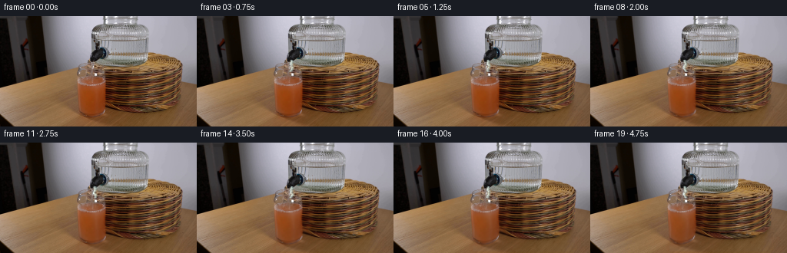
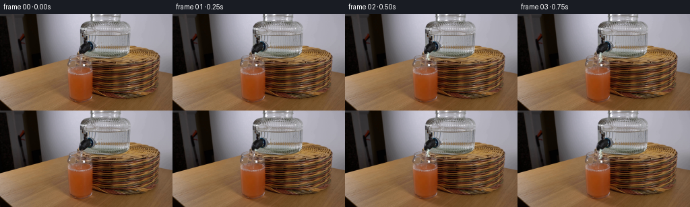

CODING AGENTS AS PIXEL WORLD MODELS
traex/DeepSeek-V4.1-Flash · 0186
点击播放 · 原生 RGB 像素
逐轮保存的候选
回放视频、检查图与代码变化。
每份候选均可单独播放。实际图片检查记录在下方工具轨迹中。
候选 01播放与检查图
点击播放 · 原生 RGB 像素


展开代码变化
--- 上一保存版本
+++ 本次保存版本
@@ -0,0 +1,281 @@
+from pathlib import Path
+
+import cv2
+import numpy as np
+from PIL import Image
+
+import artifact_io
+
+
+ROOT = Path(__file__).resolve().parent
+WIDTH = 256
+HEIGHT = 144
+FRAMES = 20
+FPS = 4
+
+
+def smoothstep(value):
+ value = np.clip(value, 0.0, 1.0)
+ return value * value * (3.0 - 2.0 * value)
+
+
+def surface_height(x, level_rise=0.0):
+ """The juice surface is nearly level, with a shallow elliptical curve."""
+ x = np.asarray(x, dtype=np.float32)
+ curve = 1.05 * ((x - 166.0) / 72.0) ** 2
+ texture = 0.30 * np.sin((x - 98.0) / 13.0) + 0.15 * np.sin((x - 98.0) / 5.5)
+ return 70.2 + curve + texture - level_rise
+
+
+def liquid_weight(x, y, level_rise=0.0, edge_softness=1.4):
+ """A feathered mask for the liquid seen through the glass."""
+ left = 101.5 + 1.4 * np.exp(-((y - 73.0) / 24.0) ** 2)
+ right = 235.8
+ edge = smoothstep((x - left) / edge_softness)
+ edge *= smoothstep((right - x) / edge_softness)
+ top = smoothstep((y - surface_height(x, level_rise)) / 1.15)
+ bottom = smoothstep((142.5 - y) / 2.0)
+ return edge * top * bottom
+
+
+def make_grid():
+ yy, xx = np.mgrid[0:HEIGHT, 0:WIDTH].astype(np.float32)
+ return xx, yy
+
+
+def flow_noise(x, y, t):
+ """Smooth, non-repeating-looking convection used for subtle mixing."""
+ return (
+ 0.44 * np.sin(0.105 * y - 0.36 * t + 0.024 * x)
+ + 0.28 * np.sin(0.061 * x + 0.117 * y + 0.57 * t)
+ + 0.17 * np.sin(0.181 * y - 0.091 * x - 0.91 * t)
+ )
+
+
+def warp_liquid(base, xx, yy, t, progress, liquid):
+ impact_x = 123.0
+ impact_y = float(surface_height(impact_x))
+ spread = 18.0 + 0.28 * np.maximum(yy - impact_y, 0.0)
+ plume = np.exp(-((xx - impact_x) / spread) ** 2)
+ depth = smoothstep((yy - impact_y) / 38.0)
+ weight = liquid * (0.18 + 0.82 * plume) * (0.35 + 0.65 * progress) * depth
+
+ dx = (
+ 0.85 * np.sin(0.16 * (yy - impact_y) + 1.10 * t)
+ + 0.36 * np.sin(0.11 * xx + 0.08 * yy - 0.70 * t)
+ )
+ dy = (
+ 0.54 * np.cos(0.13 * (xx - impact_x) + 0.95 * t)
+ + 0.22 * np.sin(0.19 * yy - 0.38 * t)
+ )
+ dx *= weight
+ dy *= weight
+ map_x = (xx + dx).astype(np.float32)
+ map_y = (yy + dy).astype(np.float32)
+ warped = cv2.remap(
+ base,
+ map_x,
+ map_y,
+ interpolation=cv2.INTER_LINEAR,
+ borderMode=cv2.BORDER_REFLECT_101,
+ )
+ return warped
+
+
+def dilute_juice(warped, xx, yy, t, progress, liquid):
+ """Add a softly spreading water plume while preserving the original texture."""
+ impact_x = 123.0
+ impact_y = float(surface_height(impact_x))
+ depth = np.maximum(yy - impact_y, 0.0)
+
+ plume_center = (
+ impact_x
+ + 2.4 * np.sin(0.115 * depth - 0.78 * t)
+ + 1.4 * np.sin(0.047 * depth + 0.31 * t)
+ )
+ plume_width = 7.0 + 0.22 * depth
+ plume = np.exp(-((xx - plume_center) / plume_width) ** 2)
+ plume *= smoothstep(depth / 7.0) * (1.0 - 0.55 * smoothstep((depth - 42.0) / 22.0))
+
+ lower_mix = smoothstep((yy - 88.0) / 42.0) * smoothstep((xx - 101.5) / 12.0)
+ lower_mix *= smoothstep((236.0 - xx) / 12.0)
+ noise = 0.5 + 0.5 * flow_noise(xx, yy, t)
+ mix = (0.24 + 0.62 * plume + 0.17 * lower_mix * noise) * progress
+ mix *= liquid
+
+ rgb = warped.astype(np.float32)
+ gray = (
+ 0.299 * rgb[..., 0]
+ + 0.587 * rgb[..., 1]
+ + 0.114 * rgb[..., 2]
+ )
+ water_color = np.stack(
+ (
+ gray * 1.025 + 5.0,
+ gray * 1.035 + 5.5,
+ gray * 1.010 + 5.0,
+ ),
+ axis=-1,
+ )
+ amount = np.clip(mix * 0.23, 0.0, 0.22)[..., None]
+ mixed = rgb * (1.0 - amount) + water_color * amount
+
+ # A cool, narrow column where the falling water has just entered the juice.
+ cool = np.exp(-((xx - plume_center) / (2.8 + 0.08 * depth)) ** 2)
+ cool *= np.exp(-depth / 36.0) * smoothstep(depth / 2.0) * progress
+ mixed += cool[..., None] * np.array([4.0, 8.0, 7.0], dtype=np.float32)
+ return np.clip(mixed, 0.0, 255.0)
+
+
+def add_surface_motion(rgb, xx, yy, t, progress):
+ impact_x = 123.0
+ impact_y = float(surface_height(impact_x))
+ dx = xx - impact_x
+ dy = yy - impact_y
+ radius = np.sqrt((dx / 1.25) ** 2 + (dy / 0.82) ** 2)
+ envelope = np.exp(-radius / 18.0) * np.exp(-((dy - 1.2) / 3.5) ** 2)
+ rings = np.sin(2.35 * radius - 4.7 * t) * envelope
+ rings *= smoothstep((yy - impact_y) / 0.7) * progress
+
+ rgb += rings[..., None] * np.array([7.5, 6.5, 5.0], dtype=np.float32)
+
+ # A small, broken crown at the point of impact.
+ crown = np.zeros((HEIGHT, WIDTH), dtype=np.float32)
+ for k in range(7):
+ angle = -1.38 + 0.46 * k
+ length = 2.8 + 1.0 * np.sin(1.7 * t + 0.9 * k)
+ x0 = impact_x + 1.0 * np.cos(angle)
+ y0 = impact_y - 0.3
+ x1 = x0 + length * np.cos(angle)
+ y1 = y0 + 0.45 * length * np.sin(angle) - 1.2
+ layer = np.zeros((HEIGHT, WIDTH), dtype=np.uint8)
+ cv2.line(
+ layer,
+ (int(round(x0)), int(round(y0))),
+ (int(round(x1)), int(round(y1))),
+ 255,
+ 1,
+ cv2.LINE_AA,
+ )
+ crown = np.maximum(crown, layer.astype(np.float32) / 255.0)
+ crown = cv2.GaussianBlur(crown, (0, 0), 0.45)
+ crown *= progress
+ rgb += crown[..., None] * np.array([28.0, 31.0, 29.0], dtype=np.float32)
+ return rgb
+
+
+def add_stream(rgb, xx, yy, t):
+ """Draw a thin falling stream from the outlet into the juice."""
+ outlet_y = 57.0
+ impact_x = 123.0
+ impact_y = float(surface_height(impact_x))
+ reach = smoothstep((t - 0.08) / 0.62)
+ bottom = outlet_y + (impact_y + 1.8 - outlet_y) * reach
+ vertical = smoothstep((yy - (outlet_y - 0.8)) / 1.0)
+ vertical *= smoothstep((bottom - yy) / 0.8)
+
+ depth = np.clip((yy - outlet_y) / max(impact_y - outlet_y, 1.0), 0.0, 1.0)
+ center = (
+ impact_x
+ + (0.28 + 0.95 * depth) * np.sin(0.63 * (yy - outlet_y) + 2.25 * t)
+ + 0.22 * np.sin(1.18 * (yy - outlet_y) - 1.4 * t)
+ )
+ width = 2.05 + 0.34 * np.sin(0.75 * (yy - outlet_y) - 2.0 * t)
+ offset = xx - center
+ body = np.exp(-(np.abs(offset) / width) ** 3.2)
+ body *= vertical
+
+ edge = np.exp(-((np.abs(offset) - width * 0.86) / 0.75) ** 2)
+ edge *= vertical
+ highlight = np.exp(-((offset + 0.58) / 0.72) ** 2) * vertical
+
+ rgb += edge[..., None] * np.array([-15.0, -10.0, -9.0], dtype=np.float32)
+ rgb = rgb * (1.0 - 0.62 * body[..., None]) + np.array(
+ [184.0, 205.0, 202.0], dtype=np.float32
+ ) * (0.62 * body[..., None])
+ rgb += highlight[..., None] * np.array([47.0, 49.0, 45.0], dtype=np.float32)
+
+ # A compact bead at the nozzle and a few detached droplets.
+ bead_y = outlet_y + 1.4 + 0.25 * np.sin(2.4 * t)
+ bead = np.exp(-(((xx - impact_x) / 1.35) ** 2 + ((yy - bead_y) / 1.0) ** 2))
+ rgb += bead[..., None] * np.array([25.0, 30.0, 28.0], dtype=np.float32)
+ for k in range(3):
+ drop_y = outlet_y + 3.2 + ((2.6 * t + 4.4 * k) % 10.0)
+ drop_x = impact_x + 1.6 * np.sin(0.8 * t + 1.4 * k)
+ drop = np.exp(-(((xx - drop_x) / 0.9) ** 2 + ((yy - drop_y) / 0.75) ** 2))
+ rgb += drop[..., None] * np.array([30.0, 34.0, 32.0], dtype=np.float32)
+ return rgb
+
+
+def add_bubbles(rgb, xx, yy, t, progress, liquid):
+ """Small bubbles rising near the water column."""
+ count = 14
+ for k in range(count):
+ seed = 17.0 * k + 3.0
+ base_x = 110.0 + ((seed * 37.0) % 64.0)
+ base_y = 76.0 + ((seed * 19.0) % 46.0)
+ speed = 2.4 + 1.2 * ((seed * 13.0) % 7.0) / 7.0
+ rise = (t * speed + 0.4 * k) % 28.0
+ bx = base_x + 1.2 * np.sin(0.6 * t + 0.9 * k) + 0.16 * rise
+ by = base_y - rise
+ if by < 72.0:
+ by += 28.0
+ radius = 0.55 + 0.45 * ((seed * 11.0) % 5.0) / 5.0
+ mask = np.exp(-(((xx - bx) / radius) ** 2 + ((yy - by) / radius) ** 2))
+ mask *= liquid * progress
+ rgb += mask[..., None] * np.array([19.0, 25.0, 24.0], dtype=np.float32)
+ return rgb
+
+
+def generate_frames():
+ first = np.asarray(Image.open(ROOT / "first_frame.png").convert("RGB"), dtype=np.uint8)
+ assert first.shape == (HEIGHT, WIDTH, 3)
+ base = first.astype(np.float32)
+ xx, yy = make_grid()
+ frames = []
+
+ for index in range(FRAMES):
+ if index == 0:
+ frames.append(first.copy())
+ continue
+
+ t = index / FPS
+ progress = float(smoothstep(index / (FRAMES - 1)))
+ level_rise = 1.05 * progress
+ liquid = liquid_weight(xx, yy, level_rise=level_rise)
+
+ warped = warp_liquid(base, xx, yy, t, progress, liquid)
+ mixed = dilute_juice(warped, xx, yy, t, progress, liquid)
+ rgb = mixed * liquid[..., None] + base * (1.0 - liquid[..., None])
+ rgb = add_surface_motion(rgb, xx, yy, t, progress)
+ rgb = add_stream(rgb, xx, yy, t)
+ rgb = add_bubbles(rgb, xx, yy, t, progress, liquid)
+ frames.append(np.clip(rgb, 0.0, 255.0).round().astype(np.uint8))
+
+ frames = np.stack(frames, axis=0)
+ assert np.array_equal(frames[0], first)
+ return frames
+
+
+def save_preview_video(frames):
+ """Optional human-viewable video; pixels.npz/index.html remain canonical."""
+ writer = cv2.VideoWriter(
+ str(ROOT / "video.mp4"),
+ cv2.VideoWriter_fourcc(*"mp4v"),
+ FPS,
+ (WIDTH, HEIGHT),
+ )
+ if writer.isOpened():
+ for frame in frames:
+ writer.write(cv2.cvtColor(frame, cv2.COLOR_RGB2BGR))
+ writer.release()
+
+
+def main():
+ frames = generate_frames()
+ artifact_io.save(frames, ROOT)
+ save_preview_video(frames)
+
+
+if __name__ == "__main__":
+ main()
候选 02播放与检查图
点击播放 · 原生 RGB 像素
展开代码变化
--- 上一保存版本
+++ 本次保存版本
@@ -127,7 +127,7 @@
return np.clip(mixed, 0.0, 255.0)
-def add_surface_motion(rgb, xx, yy, t, progress):
+def add_surface_motion(rgb, xx, yy, t, progress, liquid):
impact_x = 123.0
impact_y = float(surface_height(impact_x))
dx = xx - impact_x
@@ -135,7 +135,7 @@
radius = np.sqrt((dx / 1.25) ** 2 + (dy / 0.82) ** 2)
envelope = np.exp(-radius / 18.0) * np.exp(-((dy - 1.2) / 3.5) ** 2)
rings = np.sin(2.35 * radius - 4.7 * t) * envelope
- rings *= smoothstep((yy - impact_y) / 0.7) * progress
+ rings *= smoothstep((yy - impact_y) / 0.7) * progress * liquid
rgb += rings[..., None] * np.array([7.5, 6.5, 5.0], dtype=np.float32)
@@ -159,20 +159,20 @@
)
crown = np.maximum(crown, layer.astype(np.float32) / 255.0)
crown = cv2.GaussianBlur(crown, (0, 0), 0.45)
- crown *= progress
+ crown *= progress * liquid
rgb += crown[..., None] * np.array([28.0, 31.0, 29.0], dtype=np.float32)
return rgb
def add_stream(rgb, xx, yy, t):
"""Draw a thin falling stream from the outlet into the juice."""
- outlet_y = 57.0
+ outlet_y = 58.8
impact_x = 123.0
impact_y = float(surface_height(impact_x))
reach = smoothstep((t - 0.08) / 0.62)
bottom = outlet_y + (impact_y + 1.8 - outlet_y) * reach
- vertical = smoothstep((yy - (outlet_y - 0.8)) / 1.0)
- vertical *= smoothstep((bottom - yy) / 0.8)
+ vertical = smoothstep((yy - (outlet_y + 0.2)) / 0.7)
+ vertical *= smoothstep((bottom - yy) / 0.65)
depth = np.clip((yy - outlet_y) / max(impact_y - outlet_y, 1.0), 0.0, 1.0)
center = (
@@ -180,30 +180,31 @@
+ (0.28 + 0.95 * depth) * np.sin(0.63 * (yy - outlet_y) + 2.25 * t)
+ 0.22 * np.sin(1.18 * (yy - outlet_y) - 1.4 * t)
)
- width = 2.05 + 0.34 * np.sin(0.75 * (yy - outlet_y) - 2.0 * t)
+ width = 1.38 + 0.22 * np.sin(0.75 * (yy - outlet_y) - 2.0 * t)
offset = xx - center
- body = np.exp(-(np.abs(offset) / width) ** 3.2)
+ body = np.exp(-(np.abs(offset) / width) ** 2.8)
body *= vertical
- edge = np.exp(-((np.abs(offset) - width * 0.86) / 0.75) ** 2)
+ edge = np.exp(-((np.abs(offset) - width * 0.92) / 0.65) ** 2)
edge *= vertical
- highlight = np.exp(-((offset + 0.58) / 0.72) ** 2) * vertical
-
- rgb += edge[..., None] * np.array([-15.0, -10.0, -9.0], dtype=np.float32)
- rgb = rgb * (1.0 - 0.62 * body[..., None]) + np.array(
- [184.0, 205.0, 202.0], dtype=np.float32
- ) * (0.62 * body[..., None])
- rgb += highlight[..., None] * np.array([47.0, 49.0, 45.0], dtype=np.float32)
+ highlight = np.exp(-((offset + 0.42) / 0.50) ** 2) * vertical
+
+ rgb += edge[..., None] * np.array([-9.0, -6.0, -5.0], dtype=np.float32)
+ alpha = 0.43 * body
+ rgb = rgb * (1.0 - alpha[..., None]) + np.array(
+ [166.0, 184.0, 181.0], dtype=np.float32
+ ) * alpha[..., None]
+ rgb += highlight[..., None] * np.array([22.0, 24.0, 22.0], dtype=np.float32)
# A compact bead at the nozzle and a few detached droplets.
bead_y = outlet_y + 1.4 + 0.25 * np.sin(2.4 * t)
- bead = np.exp(-(((xx - impact_x) / 1.35) ** 2 + ((yy - bead_y) / 1.0) ** 2))
- rgb += bead[..., None] * np.array([25.0, 30.0, 28.0], dtype=np.float32)
- for k in range(3):
+ bead = np.exp(-(((xx - impact_x) / 1.15) ** 2 + ((yy - bead_y) / 0.9) ** 2))
+ rgb += bead[..., None] * np.array([12.0, 15.0, 14.0], dtype=np.float32)
+ for k in range(2):
drop_y = outlet_y + 3.2 + ((2.6 * t + 4.4 * k) % 10.0)
drop_x = impact_x + 1.6 * np.sin(0.8 * t + 1.4 * k)
- drop = np.exp(-(((xx - drop_x) / 0.9) ** 2 + ((yy - drop_y) / 0.75) ** 2))
- rgb += drop[..., None] * np.array([30.0, 34.0, 32.0], dtype=np.float32)
+ drop = np.exp(-(((xx - drop_x) / 0.72) ** 2 + ((yy - drop_y) / 0.62) ** 2))
+ rgb += drop[..., None] * np.array([15.0, 18.0, 17.0], dtype=np.float32)
return rgb
@@ -247,7 +248,7 @@
warped = warp_liquid(base, xx, yy, t, progress, liquid)
mixed = dilute_juice(warped, xx, yy, t, progress, liquid)
rgb = mixed * liquid[..., None] + base * (1.0 - liquid[..., None])
- rgb = add_surface_motion(rgb, xx, yy, t, progress)
+ rgb = add_surface_motion(rgb, xx, yy, t, progress, liquid)
rgb = add_stream(rgb, xx, yy, t)
rgb = add_bubbles(rgb, xx, yy, t, progress, liquid)
frames.append(np.clip(rgb, 0.0, 255.0).round().astype(np.uint8))
候选 03播放与检查图
可观测工具轨迹
实际执行的命令与返回图片。
命令 1exit 0
/bin/bash -c "pwd && rg --files -g '"'!*.git*'"'"
命令 2exit 0
/bin/bash -c "sed -n '1,240p' prompt.txt"
命令 3exit 0
/bin/bash -c "sed -n '1,280p' GENERATION_RULES.md"
命令 4exit 0
/bin/bash -c 'file first_frame.png && identify first_frame.png 2>/dev/null || true && ffprobe -v error -show_entries stream=width,height,pix_fmt -of default=noprint_wrappers=1 first_frame.png 2>/dev/null || true'
命令 5exit 0
/bin/bash -c "python - <<'PY'
from PIL import Image
import numpy as np
im=Image.open('first_frame.png').convert('RGB')
a=np.array(im)
print(im.size, a.shape, a.dtype)
print('global min/max/mean', a.min((0,1)), a.max((0,1)), a.mean((0,1)))
# downsample to terminal color blocks using ANSI truecolor
for y in range(0,144,4):
row=[]
for x in range(0,256,4):
c=a[y:y+4,x:x+4].mean((0,1)).astype(int)
row.append(f'\\x1b[48;2;{c[0]};{c[1]};{c[2]}m ')
print(''.join(row)+'\\x1b[0m')
PY"命令 6exit 0
/bin/bash -c "python - <<'PY'
from PIL import Image, ImageFilter, ImageOps
import numpy as np
im=Image.open('first_frame.png').convert('RGB')
a=np.array(im).astype(float)
g=np.array(im.convert('L').resize((128,72), Image.Resampling.BILINEAR))
chars=' .,:;irsXA253hMHGS#9B&@'
for row in g:
print(''.join(chars[min(len(chars)-1,int(v/256*len(chars)))] for v in row))
PY"命令 7exit 0
/bin/bash -c "python - <<'PY'
from PIL import Image
import numpy as np
from sklearn.cluster import KMeans
im=Image.open('first_frame.png').convert('RGB')
a=np.asarray(im)
print('top colors')
q=(a//16)*16
u,c=np.unique(q.reshape(-1,3),axis=0,return_counts=True)
for i in np.argsort(c)[-25:][::-1]: print(tuple(u[i]),int(c[i]))
# kmeans colors
x=a.reshape(-1,3)
km=KMeans(8,random_state=0,n_init=5).fit(x)
for cen,ct in sorted(zip(km.cluster_centers_,np.bincount(km.labels_)),key=lambda z:-z[1]):print(np.round(cen).astype(int),ct)
# edge ASCII
import cv2
g=cv2.cvtColor(a,cv2.COLOR_RGB2GRAY)
e=cv2.Canny(g,40,100)
# downsample max
h,w=e.shape
for y in range(0,h,2):
row=''
for x in range(0,w,2):
v=e[y:y+2,x:x+2].max()
row += '#' if v else ' '
print(row)
PY"命令 8exit 0
/bin/bash -c "sed -n '1,280p' artifact_io.py"
命令 9exit 0
/bin/bash -c "python - <<'PY'
from PIL import Image
im=Image.open('first_frame.png')
# create 4x nearest inspection in tmp
im.resize((1024,576),Image.Resampling.NEAREST).save('.tmp/first_nearest.png')
# crops to tmp
for name,box in [('left',(0,0,128,144)),('center',(64,0,192,144)),('right',(128,0,256,144)),('top',(0,0,256,80)),('bottom',(0,64,256,144))]:
im.crop(box).resize(((box[2]-box[0])*4,(box[3]-box[1])*4),Image.Resampling.NEAREST).save('.tmp/'+name+'.png')
PY"命令 10exit 0
/bin/bash -c "python - <<'PY'
from PIL import Image
import numpy as np
im=np.asarray(Image.open('first_frame.png').convert('RGB')).astype(float)
# list mean RGB by 16x8 cells for scene geometry
for y in range(0,144,8):
print(f'{y:3d}',end=' ')
for x in range(0,256,16):
c=im[y:y+8,x:x+16].mean((0,1)).round().astype(int)
# rough char by hue/value
r,g,b=c
if max(c)<30: ch=' '
elif r>g*1.3 and g>b*1.2: ch='O' # orange/brown
elif max(c)-min(c)<15: ch='N' if r<110 else 'W'
elif r>g*1.15 and b<g*.85: ch='b'
else: ch='.'
print(ch,end='')
print()
PY"命令 11exit 0
/bin/bash -c "which python; python - <<'PY' import sys mods=['cv2','numpy','PIL','scipy','skimage','imageio','torch','matplotlib'] for m in mods: try: mod=__import__(m); print(m,'ok',getattr(mod,'__version__','')) except Exception as e: print(m,'no',e) PY which ffmpeg || true ls -la"
命令 12exit 1
/bin/bash -c "python - <<'PY'
from PIL import Image
import numpy as np
from sklearn.cluster import KMeans
im=np.asarray(Image.open('first_frame.png').convert('RGB'))
a=im.reshape(-1,3)
km=KMeans(12,random_state=2,n_init=10).fit(a)
cen=km.cluster_centers_.round().astype(int); lab=km.labels_.reshape(144,256)
# print centers + bbox + count
for i,c in enumerate(cen):
ys,xs=np.where(lab==i)
print(i, tuple(c), 'n',len(xs),'bbox', (xs.min(),ys.min(),xs.max(),ys.max()))
# map each center to char sorted brightness
chars=' .:-=+*#%@ABCDEFGHIJKLMNOPQRSTUVWXYZ'
# hue chars instead
for i,c in enumerate(cen):
r,g,b=c
if max(c)<25: ch=' '
elif max(c)-min(c)<18: ch= 'Nn' [r>120] # N dark n light
elif r>g*1.2 and g>b*1.2: ch='O' if r>130 else 'o'
elif r>g*1.1 and b>g*0.9: ch='P'
elif b>r*1.05: ch='B'
elif g>r*1.02: ch='G'
else: ch='?'
print(i,ch)
print('labels map')
for y in range(0,144,2):
print(''.join(chars_labels[i] if False else '' for i in []),end='')
PY"命令 13exit 0
/bin/bash -c "python - <<'PY'
from PIL import Image
import numpy as np
im=np.asarray(Image.open('first_frame.png').convert('RGB'))
# rgb -> rough categories via thresholds
r,g,b=im[:,:,0],im[:,:,1],im[:,:,2]
cat=np.zeros((144,256),dtype=np.uint8)
# background grey/wht
cat[(np.max(im,2)-np.min(im,2)<18)&(np.mean(im,2)>110)]=1
cat[(np.max(im,2)-np.min(im,2)<18)&(np.mean(im,2)>70)&(np.mean(im,2)<=110)]=2
cat[(np.max(im,2)-np.min(im,2)<18)&(np.mean(im,2)<=70)]=3
# skin/beige/yellow
cat[(r>g+10)&(g>b+8)&(r<205)]=4
# orange juice
cat[(r>g*1.5)&(g>b*1.25)&(r>120)]=5
# dark brown
cat[(r<100)&(r>g*1.15)&(g>b*1.1)]=6
chars=' 123456'
for y in range(0,144,2):
print(''.join(chars[cat[y:y+2,x:x+2].max()] for x in range(0,256,2)))
PY"命令 14exit 0
/bin/bash -c "python - <<'PY'
from PIL import Image
import numpy as np
im=np.asarray(Image.open('first_frame.png').convert('RGB')).astype(float)
# scan rows for boundaries by hue and brightness, at selected x
for x in [20,40,60,80,100,120,140,160,180,200,220,240]:
print('\\nx',x)
for y in range(0,144,4):
c=im[y,x].astype(int); print(f'{y:3d}:{c[0]:3d},{c[1]:3d},{c[2]:3d}',end=' ')
if y%20==16: print()
print()
PY"命令 15exit 0
/bin/bash -c "python - <<'PY'
from PIL import Image
import numpy as np
im=np.asarray(Image.open('first_frame.png').convert('RGB')).astype(float)
# strongest horizontal gradients per row
lum=im.mean(2)
gx=np.abs(np.diff(lum,axis=1)); gy=np.abs(np.diff(lum,axis=0))
print('row edges y: x positions sums')
for y in [40,44,48,52,56,60,64,68,72,76,80,84,88,92,96,100,110,120,130,140]:
ix=np.argsort(gx[y])[-8:]
print(y, sorted([(int(x),int(gx[y,x])) for x in ix]))
print('vertical edges')
for x in [70,80,90,100,110,120,130,140,150,160,170,180,190,200,210,220,230,240]:
iy=np.argsort(gy[:,x])[-6:]
print(x, sorted([(int(y),int(gy[y,x])) for y in iy]))
PY"命令 16exit 0
/bin/bash -c "python - <<'PY'
from PIL import Image
import numpy as np
im=np.asarray(Image.open('first_frame.png').convert('RGB')).astype(np.float32)
# Quantize and output symbolic map at 4x4 blocks: kmeans not available fixed; use 3x3 high-pass edge + color
lum=im.mean(2)
gx=np.abs(np.diff(lum,axis=1)); gy=np.abs(np.diff(lum,axis=0))
for y in range(0,144,3):
row=''
for x in range(0,256,3):
r,g,b=im[y:y+3,x:x+3].mean((0,1))
e=0
if x<253:e+=gx[y:y+3,x:x+3].max()
if y<141:e+=gy[y:y+3,x:x+3].max()
# categories
if e>40: ch='#'
elif max(r,g,b)<20: ch=' '
elif max(r,g,b)-min(r,g,b)<18: ch= 'w' if r>125 else ('n' if r>65 else 'd')
elif r>g*1.15 and g>b*1.15: ch='o' if r>130 else 'b'
elif r>g*1.08 and b>g*0.9: ch='p'
elif b>r*1.02: ch='c'
else: ch='.'
row+=ch
print(row)
PY"命令 17exit 0
/bin/bash -c "python - <<'PY'
from PIL import Image
im=Image.open('first_frame.png').convert('RGB')
# save ascii style thumbnails via ANSI with 2x4 blocks and crop around likely glass/right
# half horizontal resolution 2, vertical 3, block char based on average color
import numpy as np
a=np.asarray(im).astype(int)
for title, box in [('full',(0,0,256,144)),('right',(96,0,256,144)),('glass',(120,30,230,144))]:
x0,y0,x1,y1=box
print('\\n'+title)
for y in range(y0,y1,3):
for x in range(x0,x1,2):
c=a[y:y+3,x:x+2].mean((0,1)).astype(int)
# use 24bit escape
print(f'\\x1b[48;2;{c[0]};{c[1]};{c[2]}m ',end='')
print('\\x1b[0m')
PY"命令 18exit 0
/bin/bash -c "python - <<'PY'
import cv2, numpy as np
from PIL import Image
im=cv2.imread('first_frame.png')
g=cv2.cvtColor(im,cv2.COLOR_BGR2GRAY)
e=cv2.Canny(g,30,90)
lines=cv2.HoughLinesP(e,1,np.pi/180,threshold=18,minLineLength=12,maxLineGap=4)
print('lines',len(lines) if lines is not None else 0)
if lines is not None:
for l in sorted(lines[:,0].tolist(), key=lambda z: -(z[2]-z[0])**2-(z[3]-z[1])**2)[:80]: print(l)
PY"命令 19exit 0
/bin/bash -c "python - <<'PY'
from PIL import Image
import numpy as np
im=np.asarray(Image.open('first_frame.png').convert('RGB')).astype(int)
# Output RGB color symbols at coarse 8x8 with palette centroid nearest, list centroids
# custom palette from top quantized colors
pal=np.array([[0,0,0],[20,12,5],[50,48,48],[80,78,80],[105,100,100],[125,122,122],[145,142,145],[170,168,178],[205,203,218],
[170,130,80],[150,114,75],[130,96,65],[110,72,36],[90,60,35],[70,40,20],[155,70,18],[180,140,90]])
chars='0123456789ABCDEFG'
for y in range(0,144,4):
row=''
for x in range(0,256,4):
c=im[y:y+4,x:x+4].mean((0,1))
d=((pal-c)**2).sum(1)
row+=chars[d.argmin()]
print(row)
PY"命令 20exit 0
/bin/bash -c "python - <<'PY'
from PIL import Image
import numpy as np
im=np.asarray(Image.open('first_frame.png').convert('RGB')).astype(int)
# global row mean and selected areas means, identify scene object rows
for y in range(0,144,4):
print(y, np.round(im[y:y+4].mean((0,1))).astype(int), 'left',np.round(im[y:y+4,:64].mean((0,1))).astype(int), 'mid',np.round(im[y:y+4,64:160].mean((0,1))).astype(int),'right',np.round(im[y:y+4,160:].mean((0,1))).astype(int))
PY"命令 21exit 0
/bin/bash -c "python - <<'PY'
from PIL import Image
import numpy as np
im=np.asarray(Image.open('first_frame.png').convert('RGB')).astype(int)
# print vertical color profile for several columns with short numeric chars
chars=' 0123456789ABCDEFGHIJKLMNOPQRSTUVWXYZabcdefghijklmnopqrstuvwxyz'
# char based on luminance only, for each x line 144 chars; columns every 8px
for x in range(0,256,8):
vals=im[:,x].mean(1)
s=''.join(chars[min(61,int(v/256*62))] for v in vals)
print(f'{x:3d} {s}')
PY"命令 22exit 0
/bin/bash -c "python - <<'PY'
from PIL import Image
import numpy as np
from sklearn.cluster import KMeans
im=np.asarray(Image.open('first_frame.png').convert('RGB'))
a=im.reshape(-1,3)
km=KMeans(16,random_state=3,n_init=10).fit(a)
cen=km.cluster_centers_.round().astype(int); lab=km.labels_.reshape(144,256)
print('centers:')
for i,c in enumerate(cen): print(chr(65+i),tuple(c), 'n',int((lab==i).sum()))
print('map (4x4 blocks, most frequent cluster):')
for y in range(0,144,4):
row=''
for x in range(0,256,4):
vals,cts=np.unique(lab[y:y+4,x:x+4],return_counts=True)
i=vals[cts.argmax()]
row+=chr(65+i)
print(row)
PY"命令 23exit 0
/bin/bash -c "python - <<'PY'
from PIL import Image
import numpy as np
im=np.asarray(Image.open('first_frame.png').convert('RGB')).astype(np.float32)
# Color class map at 2px horizontal x 3px vertical, region x=80..256
# Classes tuned to image: dark, gray, white, skin, orange, brown
for y in range(0,144,3):
row=''
for x in range(80,256,2):
c=im[y:y+3,x:x+2].mean((0,1)); r,g,b=c
mx,mn=max(c),min(c)
if mx<25: ch=' '
elif mx-mn<20: ch='W' if r>175 else ('w' if r>120 else ('n' if r>70 else 'd'))
elif r>g*1.65 and g>b*1.25: ch='J' # saturated juice
elif r>g*1.25 and g>b*1.18: ch='O' # orange wood
elif r>g*1.08 and b>g*.88: ch='S' # skin/glass reflection
elif b>r*1.03: ch='C' # cool gray
else: ch='.'
row+=ch
print(f'{y:3d} '+row)
PY"命令 24exit 0
/bin/bash -c "python - <<'PY'
from PIL import Image
import numpy as np
im=np.asarray(Image.open('first_frame.png').convert('RGB')).astype(float)
# output hue/sat in HSV at 2x3 symbolic; focus 80..256
import cv2
hsv=cv2.cvtColor(im.astype(np.uint8),cv2.COLOR_RGB2HSV)
for y in range(0,144,3):
row=''
for x in range(80,256,2):
H,S,V=hsv[y:y+3,x:x+2].reshape(-1,3).mean(0)
if V<25:ch=' '
elif S<18:ch='W' if V>180 else ('w' if V>125 else ('n' if V>70 else 'd'))
elif H<12 or H>175:ch='R'
elif H<25:ch='O'
elif H<40:ch='Y'
elif H<90:ch='G'
elif H<135:ch='C'
else:ch='B'
row+=ch
print(f'{y:3d} '+row)
PY"命令 25exit 0
/bin/bash -c "python - <<'PY'
from PIL import Image
import numpy as np
im=np.asarray(Image.open('first_frame.png').convert('RGB')).astype(float)
# representative horizontal scanlines colors every 8 px 80..248
for y in [48,52,56,60,64,68,72,76,80,84,88,92,96,100,104,108,112,116,120,124,128]:
print('\\ny=',y)
for x in range(80,256,8):
c=im[y,x].astype(int)
print(f'{x}:{c[0]:02x}{c[1]:02x}{c[2]:02x}',end=' ')
print()
PY"命令 26exit 0
/bin/bash -c "python - <<'PY'
from PIL import Image
import numpy as np
im=np.asarray(Image.open('first_frame.png').convert('RGB')).astype(float)
# Find boundary of glass likely via saturated orange region in right side.
r,g,b=im[:,:,0],im[:,:,1],im[:,:,2]
mask=(r>g*1.4)&(g>b*1.15)&(r>90)&(np.arange(256)[None,:]>95)
# horizontal occupied range by row, vertical by col
print('row ranges orange mask')
for y in range(40,144,4):
xs=np.where(mask[y])[0]
if len(xs): print(y, xs.min(),xs.max(),len(xs))
print('col ranges')
for x in range(96,256,8):
ys=np.where(mask[:,x])[0]
if len(ys): print(x,ys.min(),ys.max(),len(ys))
PY"命令 27exit 0
/bin/bash -c "python - <<'PY'
from PIL import Image
import numpy as np
im=np.asarray(Image.open('first_frame.png').convert('RGB')).astype(int)
# 4x4 blocks over x80:256, print mean color as code with nearest from palette
pal=np.array([[0,0,0],[20,12,6],[45,40,38],[70,65,62],[95,90,88],[125,120,120],[155,150,155],[185,182,195],[215,212,225],
[60,35,20],[90,60,35],[120,85,55],[150,110,75],[175,135,95],[190,145,100],[145,70,22],[170,90,40],[200,150,100],[115,45,20]])
chars='0123456789ABCDEFGHIJ'
for y in range(0,144,4):
row=''
for x in range(80,256,4):
c=im[y:y+4,x:x+4].mean((0,1))
d=((pal-c)**2).sum(1)
row+=chars[d.argmin()]
print(f'{y:3d} '+row)
PY"命令 28exit -1
/bin/bash -c "python - <<'PY'
from PIL import Image
import numpy as np, cv2
im=np.asarray(Image.open('first_frame.png').convert('RGB'))
r,g,b=im[:,:,0].astype(float),im[:,:,1].astype(float),im[:,:,2].astype(float)
mask=((r>g*1.32)&(g>b*1.10)&(r>75)).astype(np.uint8)
# bbox only
roi=np.zeros_like(mask);roi[70:136,94:144]=1;mask*=roi
# close
m=cv2.morphologyEx(mask,cv2.MORPH_CLOSE,np.ones((3,3),np.uint8))
n,lab,stats,cent=cv2.connectedComponentsWithStats(m)
for i in range(1,n):
print(i,stats[i].tolist(),cent[i])
# largest
idx=1+np.argmax(stats[1:,4]); mm=(lab==idx).astype(np.uint8)
print('largest top/bottom by x')
for x in range(94,144,2):
ys=np.where(mm[:,x])[0]
print(x, (ys.min(),ys.max(),len(ys)) if len(ys) else None)
# print mask ASCII x94-144 y70-136 every px
for y in range(70,136):
print(f'{y:3d} '+''.join('#' if mm[y,x] else ' ' for x in range(94,144)))
PY"命令 29exit 0
/bin/bash -c "python - <<'PY'
from PIL import Image
import numpy as np, cv2
im=np.asarray(Image.open('first_frame.png').convert('RGB'))
r,g,b=im[:,:,0].astype(float),im[:,:,1].astype(float),im[:,:,2].astype(float)
mask=((r>g*1.32)&(g>b*1.10)&(r>75)).astype(np.uint8)
roi=np.zeros_like(mask);roi[70:136,94:144]=1;mask*=roi
m=cv2.morphologyEx(mask,cv2.MORPH_CLOSE,np.ones((3,3),np.uint8))
n,lab,stats,cent=cv2.connectedComponentsWithStats(m)
for i in range(1,n): print(i,stats[i].tolist(),cent[i])
idx=1+np.argmax(stats[1:,4]); mm=(lab==idx).astype(np.uint8)
print('largest top/bottom by x')
for x in range(94,144,2):
ys=np.where(mm[:,x])[0]
print(x, (ys.min(),ys.max(),len(ys)) if len(ys) else None)
print('mask')
for y in range(70,136): print(f'{y:3d} '+''.join('#' if mm[y,x] else ' ' for x in range(94,144)))
PY"命令 30exit 0
/bin/bash -c "python - <<'PY'
from PIL import Image
import numpy as np
im=np.asarray(Image.open('first_frame.png').convert('RGB')).astype(float)
# glass boundary inferred by strong vertical / diagonal edges; print colored chars at 1px x 2px
# For each y, report runs of pixels whose local color differs from bg, around x=100..240
for y in range(44,136,4):
row=[]
for x in range(96,244,2):
c=im[y:y+2,x:x+2].mean((0,1));r,g,b=c
if r>g*1.5 and g>b*1.2:ch='J'
elif r>g*1.12 and g>b*1.12:ch='o'
elif max(c)<35:ch='.'
elif max(c)-min(c)<15:ch='g'
else:ch='-'
row.append(ch)
print(f'{y:3d} '+''.join(row))
PY"命令 31exit 0
/bin/bash -c "python - <<'PY'
from PIL import Image
import numpy as np
im=np.asarray(Image.open('first_frame.png').convert('RGB')).astype(float)
# Find glass outline using Canny lines; print edge map region x90-245 y40-144 at 2x2
import cv2
g=cv2.cvtColor(im.astype(np.uint8),cv2.COLOR_RGB2GRAY)
e=cv2.Canny(g,20,70)
for y in range(40,144,2):
row=''
for x in range(90,246,2): row += '#' if e[y:y+2,x:x+2].max() else ' '
print(f'{y:3d} '+row)
PY"命令 32exit 0
/bin/bash -c "python - <<'PY'
from PIL import Image
import numpy as np
im=np.asarray(Image.open('first_frame.png').convert('RGB')).astype(int)
# print color table unique frequent in center-right lower
from collections import Counter
for box in [(95,70,145,136),(140,70,230,136),(120,50,230,90),(0,40,95,144),(150,0,256,48)]:
x0,y0,x1,y1=box
a=im[y0:y1,x0:x1]
q=(a//8)*8
u,c=np.unique(q.reshape(-1,3),axis=0,return_counts=True)
print('\\nbox',box)
for i in np.argsort(c)[-12:][::-1]:print(tuple(u[i]),int(c[i]))
PY"命令 33exit 0
/bin/bash -c "python - <<'PY'
from PIL import Image
import numpy as np
im=np.asarray(Image.open('first_frame.png').convert('RGB')).astype(int)
# print 8x8 cell block chars based on RGB vector categorized into manually defined 16 cluster-like palette
# Better: for x 96..236 print edge score only at 2px horizontal 2px vertical
import cv2
g=cv2.cvtColor(im.astype(np.uint8),cv2.COLOR_RGB2GRAY)
e=cv2.Canny(g,25,80)
# connected contour stats
cs,_=cv2.findContours(e,cv2.RETR_LIST,cv2.CHAIN_APPROX_SIMPLE)
cs=sorted(cs,key=cv2.contourArea,reverse=True)[:30]
for c in cs:
x,y,w,h=cv2.boundingRect(c); print(x,y,w,h,round(cv2.contourArea(c),1),len(c))
PY"命令 34exit 0
/bin/bash -c "python - <<'PY'
from PIL import Image
import numpy as np
im=np.asarray(Image.open('first_frame.png').convert('RGB')).astype(float)
# Color feature x/y map x80..255, 3px steps; print string of dominant color category per 3x3
for y in range(0,144,3):
row=''
for x in range(80,256,2):
c=im[y:y+3,x:x+2].mean((0,1));r,g,b=c
# classify by RGB distance to conceptual colors
cols={'K':(5,5,5),'d':(40,38,38),'g':(85,82,82),'l':(130,126,126),'w':(170,168,176),'W':(205,203,215),
'b':(90,60,35),'o':(125,90,55),'O':(155,115,75),'s':(175,140,100),'j':(150,70,20),'J':(145,60,12)}
ch=min(cols,key=lambda k:sum((c[i]-cols[k][i])**2 for i in range(3)))
row+=ch
print(row)
PY"命令 35exit 0
/bin/bash -c "python - <<'PY'
from PIL import Image
import numpy as np
im=np.asarray(Image.open('first_frame.png').convert('RGB')).astype(float)
# Print a compact color legend image encoded as sixel? no. Generate HTML/text is not visible. Use PCA projection RGB to chars with hue.
# Let's detect vertical columns of glass via exact x-wise variance around x120-240
lum=im.mean(2)
print('x mean & std by ranges')
for x in range(80,256,4):
print(x,round(lum[:,x].mean(),1),round(lum[:,x].std(),1))
PY"命令 36exit 0
/bin/bash -c "python - <<'PY'
from PIL import Image
import numpy as np
im=np.asarray(Image.open('first_frame.png').convert('RGB')).astype(float)
# Find glass rim/edges by segmentation mask of dark holes, reflections. Print 1px x 3px map x118-242 y54-135 categories with rich chars
for y in range(54,136,3):
row=''
for x in range(118,244,1):
c=im[y:y+3,x].mean(0);r,g,b=c; mx,mn=max(c),min(c)
if mx<18:ch=' '
elif mx-mn<14:ch='W' if r>175 else ('w' if r>125 else ('n' if r>70 else 'd'))
elif r>g*1.35 and g>b*1.15:ch='J'
elif r>g*1.12 and g>b*1.1:ch='O'
elif r>g*1.03 and b>g*.9:ch='s'
else:ch='.'
row+=ch
print(f'{y:3d} '+row)
PY"命令 37exit 0
/bin/bash -c "python - <<'PY'
from PIL import Image
import numpy as np
im=np.asarray(Image.open('first_frame.png').convert('RGB')).astype(float)
# draw 8x8 blocks around x80-240 y40-140 with chars for R,G,B normalized separately
for y in range(40,144,4):
row=''
for x in range(80,256,4):
c=im[y:y+4,x:x+4].mean((0,1));r,g,b=c
# print dominant RGB digits: use letters for brightness in each channel? symbols color category manually
if max(c)<25: ch='.'
elif abs(r-g)<8 and abs(g-b)<8: ch= '#' if r>160 else ('+' if r>100 else '-')
elif r>g and g>b:
# warm, use severity based on saturation
sat=(r-b)/max(r,1)
ch='J' if sat>.55 else ('o' if sat>.32 else 'O')
elif b>r and b>g: ch='c'
elif g>r and g>b: ch='g'
else: ch='?'
row+=ch
print(f'{y:3d} '+row)
PY"命令 38exit 0
/bin/bash -c "python - <<'PY'
from PIL import Image
import numpy as np, cv2
im=np.asarray(Image.open('first_frame.png').convert('RGB')).astype(np.uint8)
g=cv2.cvtColor(im,cv2.COLOR_RGB2GRAY)
# print high contrast ASCII x80..200 y0..80, 2x2 with edges and brightness
for y in range(0,80,2):
row=''
for x in range(80,210,2):
v=g[y:y+2,x:x+2].mean(); e=cv2.Canny(g,30,100)[y:y+2,x:x+2].max()
if e: ch='#'
elif v<25:ch=' '
elif v<55:ch='.'
elif v<90:ch=':'
elif v<125:ch='+'
elif v<160:ch='*'
elif v<190:ch='O'
else:ch='@'
row+=ch
print(f'{y:2d} '+row)
PY"命令 39exit 0
/bin/bash -c "python - <<'PY'
from PIL import Image
import numpy as np
im=np.asarray(Image.open('first_frame.png').convert('RGB')).astype(float)
# Find pixels of container rim? Sample 3x3 medians then print 8px rows at x 100..256
for y in range(40,90,4):
print('\\nrow',y)
for x in range(100,256,4):
c=np.median(im[y:y+4,x:x+4].reshape(-1,3),axis=0).astype(int)
print(f'{x}:{c[0]:02x}{c[1]:02x}{c[2]:02x}',end=' ')
print()
PY"命令 40exit 0
/bin/bash -c "python - <<'PY'
from PIL import Image
import numpy as np
im=np.asarray(Image.open('first_frame.png').convert('RGB')).astype(float)
# detailed map x88..152 y56..108, 1 pixel using luminance and saturation
chars=' .:-=+*#%@'
for y in range(56,109):
row=''
for x in range(88,153):
r,g,b=im[y,x]; v=(r+g+b)/3; sat=max(r,g,b)-min(r,g,b)
if sat>45 and r>g>b: ch='J'
elif sat>30 and r>g>b: ch='o'
elif v<18:ch=' '
else: ch=chars[min(9,int(v/256*10))]
row+=ch
print(f'{y:3d} '+row)
PY"命令 41exit 0
/bin/bash -c "python - <<'PY'
from PIL import Image
import numpy as np, cv2
im=np.asarray(Image.open('first_frame.png').convert('RGB')).astype(np.float32)
r,g,b=im[:,:,0],im[:,:,1],im[:,:,2]
hsv=cv2.cvtColor(im.astype(np.uint8),cv2.COLOR_RGB2HSV)
S=hsv[:,:,1]; V=hsv[:,:,2]; H=hsv[:,:,0]
# juice saturation threshold, row runs at least 10 px
m=(S>95)&(V>45)&(H<30)
for y in range(55,144,2):
xs=np.where(m[y,90:245])[0]+90
runs=[]
if len(xs):
br=np.r_[0,np.where(np.diff(xs)>1)[0]+1,len(xs)]
for a,z in zip(br[:-1],br[1:]):
if z-a>=8:runs.append((int(xs[a]),int(xs[z-1]),int(z-a)))
print(y,runs)
PY"命令 42exit 0
/bin/bash -c "python - <<'PY'
from PIL import Image
import numpy as np
im=np.asarray(Image.open('first_frame.png').convert('RGB')).astype(float)
# vertical rows color profile x120-130 and x125-135; find center dark outlet
for box in [(116,56,128,92),(120,54,132,92),(108,54,124,92),(90,50,150,75)]:
x0,y0,x1,y1=box;a=im[y0:y1,x0:x1]
print('box',box,'mean',a.mean((0,1)).round(),'dark count',(a.mean(2)<30).sum())
# horizontal values y55..70 x110..145
for y in range(54,76,2):
print(y, [(x,tuple(im[y,x].astype(int))) for x in range(108,148,2)])
PY"命令 43exit 0
/bin/bash -c "python - <<'PY'
from PIL import Image
import numpy as np
im=np.asarray(Image.open('first_frame.png').convert('RGB')).astype(float)
# Region color stats: use all points and estimate linear depth maps? Print row medians in x bands
for y0 in range(64,144,4):
vals=[]
for x0,x1 in [(90,105),(105,120),(120,140),(140,160),(160,180),(180,200),(200,220),(220,240)]:
c=np.median(im[y0:y0+4,x0:x1].reshape(-1,3),axis=0).astype(int)
vals.append(f'{c[0]:02x}{c[1]:02x}{c[2]:02x}')
print(f'{y0:3d}', ' '.join(vals))
PY"命令 44exit 0
/bin/bash -c "python - <<'PY'
from PIL import Image
import numpy as np
im=np.asarray(Image.open('first_frame.png').convert('RGB')).astype(float)
# scan selected y values, smooth x color derivative to find object boundaries from x80..256
lum=im.mean(2)
for y in [60,64,68,72,76,80,84,88,92,96,100,104,108,112,116,120,124,128,132,136,140]:
a=lum[y,80:256]
sm=np.convolve(a,np.ones(5)/5,'same'); d=np.abs(np.diff(sm))
peaks=np.where(d>4)[0]+80
print(y, peaks.tolist()[:40])
PY"命令 45exit 0
/bin/bash -c "python - <<'PY'
from PIL import Image
import numpy as np, cv2
im=np.asarray(Image.open('first_frame.png').convert('RGB'))
hsv=cv2.cvtColor(im,cv2.COLOR_RGB2HSV)
for y in range(58,132):
a=im[y,100:143].astype(float); h=hsv[y,100:143]
sat=np.mean(h[:,1]); med=np.median(a,0).astype(int); mean=a.mean(0).astype(int)
print(f'{y:3d} med {med[0]:3d},{med[1]:3d},{med[2]:3d} mean {mean[0]:3d},{mean[1]:3d},{mean[2]:3d} S{sat:5.1f} maxS{h[:,1].max():3d}')
PY"命令 46exit 0
/bin/bash -c "python - <<'PY'
from PIL import Image
import numpy as np
im=np.asarray(Image.open('first_frame.png').convert('RGB')).astype(float)
# Search for glass ellipse/rim by colored runs in lower half at y 80..135, print image in very compact 2px by 3px with nearest 8-color
pal=np.array([[5,5,5],[35,32,32],[75,70,68],[110,105,105],[140,138,145],[175,173,185],[205,203,215],
[120,90,60],[150,115,75],[100,65,38],[155,70,20],[70,40,20],[55,20,10]])
ch='0123456789ABC'
for y in range(60,144,3):
row=''
for x in range(80,256,2):
c=im[y:y+3,x:x+2].mean((0,1)); d=((pal-c)**2).sum(1); row+=ch[d.argmin()]
print(row)
PY"命令 47exit 0
/bin/bash -c "python - <<'PY'
from PIL import Image
import numpy as np
im=np.asarray(Image.open('first_frame.png').convert('RGB')).astype(float)
# Print x map at y 92 with actual rgb categories, every px; identify glass edges by dark boundary near x137 and x231
for y in [60,64,68,72,76,80,84,88,92,96,100,104,108,112,116,120,124,128,132,136,140]:
print('\\n',y)
# only sample every 2 px and classify
out=''
for x in range(90,256,2):
c=im[y:y+1,x:x+2].mean((0,1)); r,g,b=c; s=max(c)-min(c)
if max(c)<20: ch=' '
elif s<12: ch= 'W' if r>180 else ('w' if r>130 else ('n' if r>80 else 'd'))
elif r>g*1.35 and g>b*1.1:ch='J'
elif r>g*1.1 and g>b*1.1:ch='o'
elif r>g*1.03 and b>g*.9:ch='s'
elif b>r:ch='c'
else:ch='.'
out+=ch
print(out)
PY"命令 48exit 0
/bin/bash -c "python - <<'PY'
from PIL import Image
import numpy as np
im=np.asarray(Image.open('first_frame.png').convert('RGB')).astype(int)
for y in range(60,144,2):
vals=[]
for x in [90,94,98,102,104,106,108,110,112,114,116,118,120,122,124,126,128,130,132,134,136,138,140,142,146]:
c=im[y,x]
# compact luma and chroma
vals.append(f'{c[0]:3d}/{c[1]:2d}/{c[2]:2d}')
print(f'{y:3d}', ' '.join(vals))
PY"命令 49exit 0
/bin/bash -c "python - <<'PY'
from PIL import Image
import numpy as np, cv2
im=np.asarray(Image.open('first_frame.png').convert('RGB'))
# dark connected comps in top region excluding left background
lum=im.mean(2)
m=((lum<45)&(np.indices(lum.shape)[1]>75)).astype(np.uint8)
n,lab,st,c=cv2.connectedComponentsWithStats(m)
for i in range(1,n):
if st[i,4]>=5: print(i,st[i].tolist(),c[i].round(1).tolist())
PY"命令 50exit 0
/bin/bash -c "python - <<'PY'
from PIL import Image
import numpy as np
im=np.asarray(Image.open('first_frame.png').convert('RGB')).astype(float)
# measure local gradients around dark component x118-137 y33-58 to infer shape
for y in range(28,64):
s=''
for x in range(110,150):
c=im[y,x]; v=c.mean()
s += ' ' if v<20 else ('.' if v<50 else ('o' if v<100 else ('+' if v<150 else '#')))
print(f'{y:2d} {s}')
PY"命令 51exit 0
/bin/bash -c "python - <<'PY'
from PIL import Image
import numpy as np
im=np.asarray(Image.open('first_frame.png').convert('RGB')).astype(int)
for y in [70,75,80,85,88,90,92,94,96,100,110,120,130,140]:
print('\\ny',y)
for x in list(range(80,110,2))+list(range(220,256,2)):
c=im[y,x]
print(f'{x}:{c[0]:3d},{c[1]:3d},{c[2]:3d}',end=' ')
print()
PY"命令 52exit 0
/bin/bash -c "python - <<'PY'
from PIL import Image
import numpy as np
im=np.asarray(Image.open('first_frame.png').convert('RGB')).astype(float)
# print row color transitions at y=70 with 1px mean and labels; do derivatives of RGB
for y in [66,68,70,72,74,76,78,80]:
print('\\nY',y)
for x in range(80,240,4):
c=im[y,x:x+4].mean(0).astype(int)
print(f'{x}:{c[0]},{c[1]},{c[2]}',end=' ')
print()
PY"命令 53exit 0
/bin/bash -c "python - <<'PY'
from PIL import Image
import numpy as np
im=np.asarray(Image.open('first_frame.png').convert('RGB')).astype(float)
# identify orange glass liquid shape by manually threshold saturated orange and inspect per column connected from bottom
import cv2
r,g,b=im[:,:,0],im[:,:,1],im[:,:,2]
m=((r>g*1.4)&(g>b*1.2)&(r>80)&(b<90)).astype(np.uint8)
# remove known table maybe glass region only x90:240 y70:135
m[:70]=0;m[:, :90]=0;m[:, 240:]=0;m[136:]=0
n,lab,st,c=cv2.connectedComponentsWithStats(m)
for i in range(1,n):
if st[i,4]>20:print(i,st[i].tolist(),c[i])
# print each x topmost orange pixel
print('x top/bottom')
for x in range(90,241,3):
ys=np.where(m[:,x])[0]
if len(ys):print(x,ys.min(),ys.max())
PY"命令 54exit 0
/bin/bash -c "python - <<'PY'
from PIL import Image
import numpy as np
im=np.asarray(Image.open('first_frame.png').convert('RGB')).astype(float)
# x220-236 at y65-135, print map with 1px
chars=' .:-=+*#%@'
for y in range(60,140):
row=''
for x in range(216,241):
r,g,b=im[y,x]; v=(r+g+b)/3; sat=max(r,g,b)-min(r,g,b)
if v<20:ch=' '
elif sat>60 and r>g>b:ch='J'
elif sat>35 and r>g>b:ch='o'
else:ch=chars[min(9,int(v/256*10))]
row+=ch
print(f'{y:3d} {row}')
PY"命令 55exit 0
/bin/bash -c "python - <<'PY'
from PIL import Image
import numpy as np
im=np.asarray(Image.open('first_frame.png').convert('RGB')).astype(float)
# 1px map around x86..110 to locate left glass boundary
for y in range(65,130,2):
row=''
for x in range(84,112):
r,g,b=im[y,x];v=(r+g+b)/3;s=max(r,g,b)-min(r,g,b)
if v<20:ch=' '
elif s<10:ch='g'
elif r>g*1.2 and g>b*1.2:ch='J' if s>50 else 'o'
else:ch='.'
row+=ch
print(f'{y:3d} {row}')
PY"命令 56exit 0
/bin/bash -c 'python generate.py'
命令 57exit 0
/bin/bash -c "python - <<'PY'
from pathlib import Path
from PIL import Image
import numpy as np
fs=np.stack([np.asarray(Image.open(p).convert('RGB')) for p in sorted(Path('frames').glob('*.png'))])
base=fs[0].astype(int)
for i in [1,4,8,12,16,19]:
d=np.abs(fs[i].astype(int)-base).max(2)
ys,xs=np.where(d>2)
print(i,'changed',len(xs),'bbox',(xs.min(),ys.min(),xs.max(),ys.max()),'mean',d.mean(),'max',d.max())
# per region means
for name,sl in [('glass',(slice(75,132),slice(96,143))),('right',(slice(70,132),slice(143,240))),('stream',(slice(55,92),slice(116,131)))]:
z=d[sl];print(' ',name,round(z.mean(),2),int((z>3).sum()))
PY"命令 58exit 0
/bin/bash -c "python - <<'PY'
from PIL import Image
import numpy as np
# create contact sheet of all frames at 2x, with frame numbers and diff panel later
from pathlib import Path
fs=[Image.open(p).convert('RGB') for p in sorted(Path('frames').glob('*.png'))]
W,H=256,144
sheet=Image.new('RGB',(W*4,(H+16)*5),(20,22,26))
from PIL import ImageDraw
d=ImageDraw.Draw(sheet)
for i,im in enumerate(fs):
x=(i%4)*W;y=(i//4)*(H+16)
d.text((x+4,y+2),f'{i:02d} {i/4:.2f}s',fill='white')
sheet.paste(im,(x,y+16))
sheet.save('.tmp/all_frames.png')
# crop dynamic area 4x each selected
sel=[0,3,7,11,15,19]
s2=Image.new('RGB',(W*3,(H+16)*2),(20,22,26));d=ImageDraw.Draw(s2)
for j,i in enumerate(sel):
x=(j%3)*W;y=(j//3)*(H+16);d.text((x+4,y+2),f'{i:02d}',fill='white');s2.paste(fs[i],(x,y+16))
s2.resize((s2.width*2,s2.height*2),Image.Resampling.NEAREST).save('.tmp/selected_2x.png')
# diff heat map selected
base=np.asarray(fs[0]).astype(float)
for i in [1,4,8,12,16,19]:
a=np.asarray(fs[i]).astype(float);d=np.abs(a-base).mean(2)
heat=np.zeros((H,W,3),dtype=np.uint8);heat[:,:,0]=np.clip(d*12,0,255);heat[:,:,1]=np.clip(d*4,0,255);heat[:,:,2]=np.clip(d*1.5,0,255)
Image.fromarray(heat).save(f'.tmp/diff_{i:02d}.png')
PY"命令 59exit 0
/bin/bash -c "python - <<'PY'
from PIL import Image
import numpy as np
from pathlib import Path
# Compare surface in each frame to baseline; identify rows with largest average delta around x100..236
fs=[np.asarray(Image.open(p).convert('RGB')).astype(float) for p in sorted(Path('frames').glob('*.png'))]
b=fs[0]
for i in [1,2,3,4,6,8,10,12,14,16,18,19]:
d=np.abs(fs[i]-b).mean(2)
row=d[:,100:237].mean(1)
print(i, 'top rows',[(int(y),round(float(row[y]),2)) for y in np.argsort(row)[-8:][::-1]])
PY"命令 60exit 0
/bin/bash -c "python - <<'PY'
from PIL import Image
import numpy as np
im=np.asarray(Image.open('first_frame.png').convert('RGB')).astype(float)
# nozzle region: inspect dark component and immediately below
for y in range(30,64):
row=''
for x in range(112,145):
c=im[y,x];v=c.mean()
if v<18:ch=' '
elif v<35:ch='.'
elif v<55:ch=':'
elif v<80:ch='+'
elif v<120:ch='*'
elif v<160:ch='O'
else:ch='#'
row+=ch
print(f'{y:2d} {row}')
PY"命令 61exit 0
/bin/bash -c "python - <<'PY'
from PIL import Image
import numpy as np
im=np.asarray(Image.open('first_frame.png').convert('RGB')).astype(float)
# diff generated vs base local around x100-145 y50-90, print 2x2 diff levels
from pathlib import Path
base=im
for i in [1,4,8,12,16,19]:
a=np.asarray(Image.open(f'frames/{i:02d}.png').convert('RGB')).astype(float)
d=np.abs(a-base).max(2)
print('\\nframe',i)
for y in range(50,92,2):
row=''
for x in range(100,148,1):
v=d[y:y+2,x].max()
row += ' ' if v<3 else ('.' if v<10 else ('+' if v<25 else ('#' if v<60 else '@')))
print(f'{y:2d} {row}')
PY"命令 62exit 0
/bin/bash -c "python - <<'PY'
from PIL import Image
import numpy as np
from pathlib import Path
# report max pixel diff from first per frame and temporal diff
fs=[np.asarray(Image.open(p).convert('RGB')).astype(np.int16) for p in sorted(Path('frames').glob('*.png'))]
b=fs[0]
for i,a in enumerate(fs):
print(i,'base max',int(np.abs(a-b).max()),'mean',round(float(np.abs(a-b).mean()),3),'prevmean',round(float(np.abs(a-fs[i-1]).mean()),3) if i else 0,'prevmax',int(np.abs(a-fs[i-1]).max()) if i else 0)
PY"命令 63exit 0
/bin/bash -c "python - <<'PY'
from PIL import Image
import numpy as np
from pathlib import Path
# difference stats in fixed regions x/y and list changed bounds by threshold for selected
fs=[np.asarray(Image.open(p).convert('RGB')).astype(int) for p in sorted(Path('frames').glob('*.png'))]
b=fs[0]
regions={'nozzle':(112,52,136,62),'stream':(115,60,132,74),'surface':(100,68,238,80),'glassbody':(102,80,235,128),'left':(0,0,95,144),'topright':(150,0,256,48)}
for i in [1,4,8,12,16,19]:
print('\\n',i)
for name,(x0,y0,x1,y1) in regions.items():
d=np.abs(fs[i][y0:y1,x0:x1]-b[y0:y1,x0:x1]).max(2)
print(name,'mean',round(float(d.mean()),2),'max',int(d.max()),'n>10',int((d>10).sum()))
PY"命令 64exit 0
/bin/bash -c "python - <<'PY'
from PIL import Image
import numpy as np
from pathlib import Path
# local changed coords around nozzle for frame 1 and 19
b=np.asarray(Image.open('first_frame.png').convert('RGB')).astype(int)
for i in [1,19]:
a=np.asarray(Image.open(f'frames/{i:02d}.png').convert('RGB')).astype(int)
d=np.abs(a-b).max(2)
print('frame',i)
for y in range(52,64):
xs=np.where(d[y,110:140]>10)[0]+110
if len(xs):print(y,xs.tolist())
PY"命令 65exit 0
/bin/bash -c "python - <<'PY'
from PIL import Image
import numpy as np
from pathlib import Path
b=np.asarray(Image.open('first_frame.png').convert('RGB')).astype(int)
for i in [1,19]:
a=np.asarray(Image.open(f'frames/{i:02d}.png').convert('RGB')).astype(int)
print('\\n',i)
for y in range(56,64):
for x in range(120,127):
print(f'{x},{y} {tuple(b[y,x])}->{tuple(a[y,x])}',end=' ')
print()
PY"命令 66exit 0
/bin/bash -c "python - <<'PY'
from PIL import Image
import numpy as np
im=np.asarray(Image.open('first_frame.png').convert('RGB')).astype(float)
# test whether tabletop begins y127: print avg row color and spatial gradient
for y in range(118,144):
c=im[y].mean(0); std=im[y].std(0)
print(y,c.round(1),std.round(1))
PY"命令 67exit 0
/bin/bash -c "python - <<'PY'
from PIL import Image
import numpy as np
im=np.asarray(Image.open('first_frame.png').convert('RGB')).astype(float)
# inspect masks for liquid region: create edge overlay and stats, perhaps use GrabCut? no visual.
# identify exact container bounds from color: image appears glass with liquid occupying x~103..235, surface y~70 and body till bottom.
# check variance along x at y=130, where only table/glass
for y in [70,71,72,73,74,75,80,90,100,120,130,140]:
print(y,'mean x100:240',im[y,100:240].mean(0).round(1),'median',np.median(im[y,100:240],0).round(1))
PY"命令 68exit 0
/bin/bash -c "python - <<'PY'
from PIL import Image
import numpy as np
from pathlib import Path
# create side-by-side baseline/final crops in 6x nearest
b=Image.open('first_frame.png').convert('RGB')
a=Image.open('frames/19.png').convert('RGB')
crop=(92,48,244,140)
canvas=Image.new('RGB',((crop[2]-crop[0])*2*4,(crop[3]-crop[1])*4+24),(20,20,20))
canvas.paste(b.crop(crop).resize(((crop[2]-crop[0])*4,(crop[3]-crop[1])*4),Image.Resampling.NEAREST),(0,24))
canvas.paste(a.crop(crop).resize(((crop[2]-crop[0])*4,(crop[3]-crop[1])*4),Image.Resampling.NEAREST),((crop[2]-crop[0])*4,24))
from PIL import ImageDraw
d=ImageDraw.Draw(canvas);d.text((4,4),'first',fill='white');d.text(((crop[2]-crop[0])*4+4,4),'frame 19',fill='white')
canvas.save('.tmp/compare.png')
PY"命令 69exit 0
/bin/bash -c "python - <<'PY'
from PIL import Image
import numpy as np
# verify final artifact required files, pixel array shape and frame0 exact
import json, numpy as np
p=np.load('pixels.npz')['pixels'];print(p.shape,p.dtype,p.min(),p.max())
# unpack frame0
v=p[:,:,0]
r=(v>>16)&255;g=(v>>8)&255;b=v&255
f=np.stack([r,g,b],2).astype(np.uint8)
base=np.asarray(Image.open('first_frame.png').convert('RGB'))
print('frame0 equal',np.array_equal(f,base),'nbytes',p.nbytes)
print('index size',__import__('os').path.getsize('index.html'))
PY"命令 70exit 0
/bin/bash -c "sed -n '1,240p' player_template.html"
命令 71exit 0
/bin/bash -c "python - <<'PY'
from PIL import Image
import numpy as np
im=np.asarray(Image.open('first_frame.png').convert('RGB')).astype(float)
# Use block matching style statistics to find horizontal table edge: variance changes row by row in glass region
for y in range(60,144):
a=im[y,95:240]
print(y, round(float(a.std()),2),round(float(a.mean()),2),round(float(np.abs(np.diff(a.mean(1))).mean()),2))
PY"命令 72exit 0
/bin/bash -c "python - <<'PY'
from PIL import Image
import numpy as np
im=np.asarray(Image.open('first_frame.png').convert('RGB')).astype(float)
# identify actual glass surface by strong luminance drop at y74-76, likely surface at y74. output per-x y of max gradient
lum=im.mean(2)
gy=np.abs(np.diff(lum,axis=0))
for x in range(100,241,4):
y=np.argmax(gy[60:100,x])+60
print(x,y,round(float(gy[y,x]),1),end='; ')
PY"命令 73exit 0
/bin/bash -c "python - <<'PY'
from PIL import Image
import numpy as np
im=np.asarray(Image.open('first_frame.png').convert('RGB')).astype(float)
# Sample palette at dynamic areas
for name,(x0,y0,x1,y1) in [('juice',(106,94,230,126)),('surface',(106,74,230,80)),('table',(105,129,232,143)),('left',(0,0,80,144)),('nozzle',(116,54,130,60))]:
a=im[y0:y1,x0:x1]
print(name,'mean',a.mean((0,1)).round(1),'median',np.median(a.reshape(-1,3),0).round(1),'std',a.std((0,1)).round(1))
PY"命令 74exit 0
/bin/bash -c "python - <<'PY'
from PIL import Image
import numpy as np
im=np.asarray(Image.open('first_frame.png').convert('RGB')).astype(float)
# Detect right/left edges of tabletop as horizontal gradient averaged over y129:143
for region in [(129,144),(126,144),(100,126)]:
y0,y1=region; print(region)
gx=np.abs(np.diff(im[y0:y1].mean(2),axis=1)).mean(0)
for x in np.argsort(gx)[-20:][::-1]:print(int(x),round(float(gx[x]),1),end='; ')
print()
PY"命令 75exit 0
/bin/bash -c "python - <<'PY'
from PIL import Image
import numpy as np
im=np.asarray(Image.open('first_frame.png').convert('RGB')).astype(float)
# inspect x ranges around x130-145 and x220-240 for actual glass silhouette, print at selected y
for y in range(60,132,2):
row=''
for x in range(124,245,2):
c=im[y:y+2,x:x+2].mean((0,1));r,g,b=c
# R channel fraction and brightness
if max(c)<18:ch=' '
elif r>g*1.35 and g>b*1.15:ch='J'
elif r>g*1.15 and g>b*1.1:ch='o'
elif max(c)-min(c)<15:ch='n' if r<110 else 'W'
else:ch='.'
row+=ch
print(f'{y:3d} {row}')
PY"命令 76exit 0
/bin/bash -c "python - <<'PY'
from PIL import Image
import numpy as np
im=np.asarray(Image.open('first_frame.png').convert('RGB')).astype(float)
# Identify vertical outer edges of glass from x=230..250 where gray region begins; print colors
for y in range(55,136,5):
print(y, [(x,tuple(im[y,x].astype(int))) for x in range(230,249,2)])
PY"命令 77exit 0
/bin/bash -c "sed -n '1,240p' GENERATION_RULES.md"
命令 78exit 0
/bin/bash -c "sed -n '1,320p' generate.py"
命令 79exit 0
/bin/bash -c "cat prompt.txt && printf '\\n--- files ---\\n' && find . -maxdepth 2 -type f -printf '%p %s bytes\\n' | sort"
命令 80exit 0
/bin/bash -c 'git status --short && git diff -- generate.py'
命令 81exit 0
/bin/bash -c "python - <<'PY'
from PIL import Image
import numpy as np
from pathlib import Path
root=Path('.')
f0=np.array(Image.open('first_frame.png').convert('RGB'))
frames=np.stack([np.array(Image.open(root/'frames'/f'{i:02d}.png').convert('RGB')) for i in range(20)])
for i in [0,1,2,4,8,12,19]:
a=frames[i]
reg=a[54:66,116:132]
lum=reg.mean(2)
print(f'frame {i:02d}: region min/max/mean lum={lum.min():.1f}/{lum.max():.1f}/{lum.mean():.1f}; n>220={np.sum(lum>220)}, n>240={np.sum(lum>240)}')
print('source 54:66 x116:132 luma grid')
print(np.round(f0[54:66,116:132].mean(2)).astype(int))
for i in [1,4,19]:
print(f'\\nframe {i} luma grid')
print(np.round(frames[i,54:66,116:132].mean(2)).astype(int))
idx=np.argwhere(frames[i,54:66,116:132].mean(2)>220)
if len(idx): print('bright coords rel yx:', idx.tolist(), 'rgb:', [frames[i,54+y,116+x].tolist() for y,x in idx])
PY"命令 82exit 0
/bin/bash -c "sed -n '1,260p' artifact_io.py"
命令 83exit 0
/bin/bash -c "python - <<'PY'
from PIL import Image
import numpy as np
im=np.array(Image.open('first_frame.png').convert('RGB')).astype(float)
lum=im.mean(2)
# coarse luma ascii every 4x4 pixels
chars=' .:-=+*#%@'
for y in range(0,144,4):
row=''
for x in range(0,256,4):
v=lum[y:y+4,x:x+4].mean()
row+=chars[min(9,int(v/256*10))]
print(f'{y:03d} {row}')
PY"命令 84exit 0
/bin/bash -c "python - <<'PY'
from PIL import Image
import numpy as np
im=np.array(Image.open('first_frame.png').convert('RGB')).astype(float)
# print local rgb median per row for candidate liquid columns
for y in [56,58,60,62,64,66,68,70,72,74,76,80,90,110,130]:
vals=[]
for a,b in [(102,118),(118,130),(130,160),(160,220),(220,236)]:
v=np.median(im[y,a:b],axis=0).round().astype(int)
vals.append(f'{a}:{b}={tuple(v)}')
print(y,' | '.join(vals))
PY"命令 85exit 0
/bin/bash -c "python - <<'PY'
from PIL import Image
import numpy as np
im=np.array(Image.open('first_frame.png').convert('RGB')).astype(float)
# detailed luma for nozzle region rows 47-75, x 112-137
for y in range(46,76):
s=''
for x in range(112,140):
v=im[y,x].mean()
s += ' .:-=+*#%@'[min(9,int(v/256*10))]
print(f'{y:02d} {s}')
# print exact pixel RGB around potential nozzle at rows 51-60
print('\\nselected RGB:')
for y in range(50,62):
vals=[]
for x in range(118,132):
vals.append('%02x%02x%02x'%tuple(im[y,x].astype(int)))
print(y,' '.join(vals))
PY"命令 86exit 0
/bin/bash -c "python - <<'PY'
from PIL import Image
import numpy as np
base=np.array(Image.open('first_frame.png').convert('RGB')).astype(np.int16)
frames=np.stack([np.array(Image.open(f'frames/{i:02d}.png').convert('RGB')) for i in range(20)]).astype(np.int16)
for i in [1,2,4,8,12,16,19]:
d=np.abs(frames[i]-base)
print(i,'changed',np.sum(np.any(d>0,axis=2)),'pixels; l1',d.sum(),'mean',d.mean(),'max',d.max())
# changed bounding box
ys,xs=np.where(np.any(d>0,axis=2)); print(' bbox', (xs.min(),ys.min(),xs.max(),ys.max()) if len(xs) else None)
# per-frame affected region and maxima; bright count
for i in range(20):
d=np.abs(frames[i]-base)
reg=d[55:145,100:237]
print(f'{i:02d}: mean {reg.mean():.3f} max {reg.max():3d} >10 {np.sum(reg.max(2)>10):4d} >30 {np.sum(reg.max(2)>30):4d}')
PY"命令 87exit 0
/bin/bash -c "python - <<'PY'
from PIL import Image
import numpy as np
b=np.array(Image.open('first_frame.png').convert('RGB')).astype(np.int16)
f=np.stack([np.array(Image.open(f'frames/{i:02d}.png').convert('RGB')) for i in range(20)]).astype(np.int16)
for i in [1,2,4,8,12,19]:
d=np.abs(f[i]-b)
print('\\nframe',i)
for y in range(54,76):
# count max abs diff > 5 and median max diff
row=d[y,100:240].max(1)
n=np.sum(row>5); mx=row.max(); mean=row.mean()
print(f'{y:02d} n5={n:2d} mean={mean:5.1f} max={mx:3d}')
PY"命令 88exit 0
/bin/bash -c "python - <<'PY'
from PIL import Image
import numpy as np
im=np.array(Image.open('first_frame.png').convert('RGB')).astype(float)
# output pixel matrix around nozzle: max channel, with coords
for y in range(53,73):
print(f'y={y:02d}')
for x in range(112,140):
r,g,b=im[y,x].astype(int)
print(f'{x}:{r:3d},{g:3d},{b:3d}',end=' ')
if (x-111)%4==0: print()
print()
PY"命令 89exit 0
/bin/bash -c "python - <<'PY'
from PIL import Image
import numpy as np
b=np.array(Image.open('first_frame.png').convert('RGB')).astype(np.int16)
f=np.stack([np.array(Image.open(f'frames/{i:02d}.png').convert('RGB')) for i in range(20)]).astype(np.int16)
# inspect only x 118-130 all rows 55-73 across frames, summarize changed pixels
for y in range(55,74):
rows=[]
for i in [0,1,2,4,8,12,19]:
d=np.abs(f[i,y,116:134]-b[y,116:134]).max(1)
# sequence of max diffs 116..133
rows.append(f'{i:02d}:'+' '.join(f'{v:3d}' for v in d))
print('y',y)
print('\\n'.join(rows))
PY"命令 90exit 0
/bin/bash -c "python - <<'PY'
from PIL import Image
import numpy as np
im=np.array(Image.open('first_frame.png').convert('RGB')).astype(float)
for y in range(54,74):
vals=[]
for x in range(115,130):
vals.append(f'{x}:{im[y,x].mean():.0f}')
print(y,' '.join(vals))
PY"命令 91exit 0
/bin/bash -c "python - <<'PY'
from PIL import Image
import numpy as np
b=np.array(Image.open('first_frame.png').convert('RGB')).astype(float)
for i in [0,1,2,4,8,12,19]:
a=np.array(Image.open(f'frames/{i:02d}.png').convert('RGB')).astype(float)
print('\\nframe',i)
for y in range(56,74):
d=np.abs(a[y,116:134]-b[y,116:134]).max(1)
print(f'{y:02d}:', ' '.join(f'{x}:{v:.0f}' for x,v in zip(range(116,134),d)))
PY"命令 92exit 0
/bin/bash -c "python - <<'PY'
from PIL import Image
import numpy as np
b=np.array(Image.open('first_frame.png').convert('RGB')).astype(float)
for i in [1,2,4,8,12,19]:
a=np.array(Image.open(f'frames/{i:02d}.png').convert('RGB')).astype(float)
print('\\n',i)
for y in range(57,70):
ds=[]
for x in range(121,126):
d=a[y,x]-b[y,x]
ds.append('%d,%d,%d'%tuple(np.round(d).astype(int)))
print(y,' '.join(ds),'out',tuple(np.round(a[y,123]).astype(int)))
PY"命令 93exit 0
/bin/bash -c "python - <<'PY'
from PIL import Image
import numpy as np
b=np.array(Image.open('first_frame.png').convert('RGB')).astype(float)
for i in [0,1,2,4,8,12,19]:
a=np.array(Image.open(f'frames/{i:02d}.png').convert('RGB')).astype(float)
print('\\n',i)
for y in range(57,74):
print(f'{y:02d}', ' '.join('%3.0f'%a[y,x].mean() for x in range(116,134)))
PY"命令 94exit 0
/bin/bash -c "python - <<'PY'
from PIL import Image
import numpy as np
b=np.array(Image.open('first_frame.png').convert('RGB')).astype(float)
for i in [0,1,2,4,8,12,19]:
a=np.array(Image.open(f'frames/{i:02d}.png').convert('RGB')).astype(float)
print('\\nframe',i)
for y in range(57,74):
d=np.abs(a[y,116:134]-b[y,116:134]).max(1)
print(f'{y:02d}:', ' '.join(f'{x}:{v:.0f}' for x,v in zip(range(116,134),d)))
PY"命令 95exit 0
/bin/bash -c "python - <<'PY'
from PIL import Image
import numpy as np
b=np.array(Image.open('first_frame.png').convert('RGB')).astype(float)
f0=b
for i in [1,2,4,8,12,19]:
a=np.array(Image.open(f'frames/{i:02d}.png').convert('RGB')).astype(float)
print('\\nframe',i)
for y in range(57,74):
print(f'{y:02d}', ' '.join(f'{x}:{a[y,x].mean():.0f}' for x in range(118,128)))
PY"命令 96exit 0
/bin/bash -c "python - <<'PY'
from PIL import Image
import numpy as np
b=np.array(Image.open('first_frame.png').convert('RGB')).astype(float)
for i in [0,1,2,4,8,12,19]:
a=np.array(Image.open(f'frames/{i:02d}.png').convert('RGB')).astype(float)
print('\\nframe',i)
for y in range(56,74):
# x with diff > 20, x with diff > 60, mean diff in x118:128
d=np.abs(a[y]-b[y]).max(1)
xs=np.where(d>20)[0]; xs=np.array([x for x in xs if 100<x<140])
print(f'{y:02d}', 'n>20',len(xs), ('range %d-%d'%(xs.min(),xs.max()) if len(xs) else ''), 'vals',','.join(map(str,xs[:20])))
PY"命令 97exit 0
/bin/bash -c 'python generate.py'
命令 98exit 0
/bin/bash -c "python - <<'PY'
from PIL import Image
import numpy as np
b=np.array(Image.open('first_frame.png').convert('RGB')).astype(np.int16)
f=np.stack([np.array(Image.open(f'frames/{i:02d}.png').convert('RGB')) for i in range(20)]).astype(np.int16)
print('shape',f.shape,'dtype',f.dtype)
print('frame0 exact',np.array_equal(f[0],b))
for i in [1,2,4,8,12,19]:
d=np.abs(f[i]-b)
print(i,'changed',np.sum(np.any(d>0,axis=2)),'mean',d.mean(),'max',d.max())
# background fixed checks
print('left fixed',np.array_equal(f[:,:, :95],b[None,:,:95]))
print('upper-right fixed',np.array_equal(f[:,:, 58:144,240:],b[None,58:144,240:]))
print('rows56 fixed',np.array_equal(f[:,:, 56],b[None,56]))
# brightness in nozzle box
for i in [1,2,4,8,12,19]:
lum=f[i,54:73,116:134].mean(2)
print(f'{i:02d}: mean={lum.mean():.1f} max={lum.max():.1f} >220={np.sum(lum>220)} >240={np.sum(lum>240)}')
PY"命令 99exit 1
/bin/bash -c "python - <<'PY'
from PIL import Image
import numpy as np
b=np.array(Image.open('first_frame.png').convert('RGB')).astype(np.int16)
f=np.stack([np.array(Image.open(f'frames/{i:02d}.png').convert('RGB')) for i in range(20)]).astype(np.int16)
d=np.any(f"'!=b,axis=3)
ys,xs=np.where(d)
print('"'bbox all changed',xs.min(),ys.min(),xs.max(),ys.max())
for y in [55,56,57,58,59,60,70,71,72,73,74,80,100,140,141,142,143]:
xs=np.where(d[:,y].any(0))[0]
print('row',y,'n',len(xs),'ranges', (xs.min(),xs.max()) if len(xs) else None)
# check bg boxes independently
for name,sy,sx in [('left',slice(None),slice(0,95)),('upperright',slice(0,58),slice(240,None)),('allright',slice(None),slice(240,None))]:
z=f[:,sy,sx]; bb=b[sy,sx]
print(name,'exact',np.array_equal(z,np.broadcast_to(bb,z.shape)),'changed',np.sum(np.any(z"'!=bb,axis=3)),'"'max',np.abs(z-bb).max())
PY"命令 100exit 1
/bin/bash -c "python - <<'PY'
from PIL import Image
import numpy as np
b=np.array(Image.open('first_frame.png').convert('RGB')).astype(np.int16)
f=np.stack([np.array(Image.open(f'frames/{i:02d}.png').convert('RGB')) for i in range(20)]).astype(np.int16)
d=np.any(f"'!=b[None],axis=3)
ys,xs=np.where(d)
print('"'bbox all changed',xs.min(),ys.min(),xs.max(),ys.max())
for y in [55,56,57,58,59,60,70,71,72,73,74,80,100,140,141,142,143]:
xs=np.where(d[:,y].any(0))[0]
print('row',y,'n',len(xs),'ranges', (xs.min(),xs.max()) if len(xs) else None)
for name,sy,sx in [('left',slice(None),slice(0,95)),('upperright',slice(0,58),slice(240,None)),('allright',slice(None),slice(240,None))]:
z=f[:,sy,sx]; bb=b[sy,sx]
print(name,'exact',np.array_equal(z,np.broadcast_to(bb,z.shape)),'changed',np.sum(np.any(z"'!=bb,axis=3)),'"'max',np.abs(z-bb).max())
PY"命令 101exit 0
/bin/bash -c "python - <<'PY'
from PIL import Image
import numpy as np
b=np.array(Image.open('first_frame.png').convert('RGB')).astype(np.int16)
f=np.stack([np.array(Image.open(f'frames/{i:02d}.png').convert('RGB')) for i in range(20)]).astype(np.int16)
d=np.any(f"'!=b[None],axis=3)
ys,xs,ts=np.where(d)
print('"'bbox all changed',xs.min(),ys.min(),xs.max(),ys.max(),'times',ts.min(),ts.max())
for y in [55,56,57,58,59,60,70,71,72,73,74,80,100,140,141,142,143]:
xx=np.where(d[:,y].any(0))[0]
print('row',y,'n',len(xx),'ranges', (xx.min(),xx.max()) if len(xx) else None)
for name,sy,sx in [('left',slice(None),slice(0,95)),('upperright',slice(0,58),slice(240,None)),('allright',slice(None),slice(240,None))]:
z=f[:,sy,sx]; bb=b[sy,sx]
print(name,'exact',np.array_equal(z,np.broadcast_to(bb,z.shape)),'changed',np.sum(np.any(z"'!=bb,axis=3)),'"'max',np.abs(z-bb).max())
PY"命令 102exit 0
/bin/bash -c "python - <<'PY'
from PIL import Image
import numpy as np
b=np.array(Image.open('first_frame.png').convert('RGB')).astype(float)
for i in [0,1,2,4,8,12,19]:
a=np.array(Image.open(f'frames/{i:02d}.png').convert('RGB')).astype(float)
print('\\nframe',i)
for y in range(57,74):
print(f'{y:02d}', ' '.join(f'{x}:{a[y,x].mean():.0f}' for x in range(118,128)))
PY"命令 103exit 1
/bin/bash -c "python - <<'PY'
from PIL import Image
import numpy as np
b=np.array(Image.open('first_frame.png').convert('RGB')).astype(float)
f=np.stack([np.array(Image.open(f'frames/{i:02d}.png').convert('RGB')) for i in range(20)]).astype(float)
# temporal metrics region stream
reg=(slice(59,73),slice(120,128))
for i in [1,2,4,8,12,19]:
d=f[i,reg[0],reg[1]]-b[reg]
print(i,'mean rgb diff',np.round(d.reshape(-1,3).mean(0),1),'max',np.abs(d).max())
# changed pixels outside liquid support and stream
for i in range(20):
d=np.any(f[i]"'!=b,axis=2)
ys,xs=np.where(d)
bad=(ys<58) | (xs<100) | (xs>236)
print(i,'"'bbox',xs.min(),ys.min(),xs.max(),ys.max(),'bad',bad.sum())
PY"命令 104exit 0
/bin/bash -c "python - <<'PY'
from PIL import Image
import numpy as np
b=np.array(Image.open('first_frame.png').convert('RGB')).astype(np.int16)
f=np.stack([np.array(Image.open(f'frames/{i:02d}.png').convert('RGB')) for i in range(20)]).astype(np.int16)
for i in range(1,20):
d=np.any(f[i]"'!=b,axis=2)
ys,xs=np.where(d)
print(f'"'{i:02d} changed={len(xs):4d} bbox=({xs.min()},{ys.min()},{xs.max()},{ys.max()})')
PY"命令 105exit 1
/bin/bash -c "python - <<'PY'
from pathlib import Path
from PIL import Image
import numpy as np
root=Path('.')
frames=np.stack([np.array(Image.open(root/'frames'/f'{i:02d}.png').convert('RGB')) for i in range(20)])
first=np.array(Image.open('first_frame.png').convert('RGB'))
data=np.load('pixels.npz')
pixels=data['pixels']
unpacked=np.stack([(pixels[...,i]>>16&255).astype(np.uint8),(pixels[...,i]>>8&255).astype(np.uint8),(pixels[...,i]&255).astype(np.uint8)],axis=-1)
print('frames',frames.shape,frames.dtype)
print('npz',pixels.shape,pixels.dtype)
print('frame00 exact',np.array_equal(frames[0],first))
print('npz exact',np.array_equal(unpacked,frames))
print('frame uniqueness',len({frame.tobytes() for frame in frames}))
print('html bytes',(root/'index.html').stat().st_size)
print('all finite',np.isfinite(frames.astype(float)).all())
# no changed pixels outside liquid/stream envelope
for i in range(20):
changed=np.any(frames[i]"'!=first,axis=2)
yy,xx=np.where(changed)
if len(xx):
assert xx.min()>=102 and xx.max()<=235 and yy.min()>=59 and yy.max()<=141, (i,xx.min(),yy.min(),xx.max(),yy.max())
print('"'change envelope valid')
PY"命令 106exit 0
/bin/bash -c "python - <<'PY'
from pathlib import Path
from PIL import Image
import numpy as np
root=Path('.')
frames=np.stack([np.array(Image.open(root/'frames'/f'{i:02d}.png').convert('RGB')) for i in range(20)])
first=np.array(Image.open('first_frame.png').convert('RGB'))
pixels=np.load('pixels.npz')['pixels']
unpacked=np.stack([(pixels[...,i]>>16&255).astype(np.uint8) for i in range(20)],axis=-1)
unpacked=np.stack([(unpacked>>16)&255,(unpacked>>8)&255,unpacked&255],axis=-1).astype(np.uint8)
print('frames',frames.shape,frames.dtype)
print('npz',pixels.shape,pixels.dtype)
print('frame00 exact',np.array_equal(frames[0],first))
print('npz exact',np.array_equal(unpacked,frames))
print('frame uniqueness',len({frame.tobytes() for frame in frames}))
print('html bytes',(root/'index.html').stat().st_size)
for i in range(20):
changed=np.any(frames[i]"'!=first,axis=2)
yy,xx=np.where(changed)
if len(xx):
assert xx.min()>=102 and xx.max()<=235 and yy.min()>=59 and yy.max()<=141, (i,xx.min(),yy.min(),xx.max(),yy.max())
print('"'change envelope valid')
PY"命令 107exit 0
/bin/bash -c "python - <<'PY'
from pathlib import Path
from PIL import Image
import numpy as np
frames=np.stack([np.array(Image.open(f'frames/{i:02d}.png').convert('RGB')) for i in range(20)])
pixels=np.load('pixels.npz')['pixels']
a=np.stack([(pixels>>16)&255,(pixels>>8)&255,pixels&255],axis=-1).astype(np.uint8)
print('unpacked',a.shape)
print('maxdiff',np.abs(a.astype(int)-frames.transpose(1,2,0,3).astype(int)).max())
print('count diff',np.sum(a"'!=frames.transpose(1,2,0,3)))
PY'命令 108exit 0
/bin/bash -c "python - <<'PY'
from PIL import Image
import numpy as np
frames=[Image.open(f'frames/{i:02d}.png').convert('RGB') for i in range(20)]
# 5x4 contact sheet at native size with 2px separators, and close-up nozzle/pour strips
sheet=Image.new('RGB',(256*5+8,144*4+6),(28,30,34))
for i,im in enumerate(frames):
x=(i%5)*(256+2); y=(i//5)*(144+2)
sheet.paste(im,(x,y))
sheet.save('.tmp/final_contact.png')
# temporal comparison: select frames as 4 horizontal strips, each 2x crop around pour, arranged vertically
sel=[0,2,4,8,12,19]
strip=Image.new('RGB',(512,len(sel)*144),(28,30,34))
for row,i in enumerate(sel):
crop=frames[i].crop((94,48,238,142)).resize((288,188),Image.Resampling.NEAREST)
# fit within 144 height by crop scale? use original then upsample 2x and crop width
strip.paste(crop,(0,row*144))
strip.save('.tmp/final_pour_strip.png')
print(sheet.size,strip.size)
PY"命令 109exit 0
/bin/bash -c "sha256sum frames/*.png pixels.npz index.html video.mp4 > .tmp/hashes_before.txt && python generate.py && sha256sum frames/*.png pixels.npz index.html video.mp4 > .tmp/hashes_after.txt && diff -u .tmp/hashes_before.txt .tmp/hashes_after.txt && printf 'deterministic: yes\\n'"
命令 110exit 0
/bin/bash -c "python - <<'PY'
from pathlib import Path
from PIL import Image
import numpy as np
first=np.array(Image.open('first_frame.png').convert('RGB'))
frames=np.stack([np.array(Image.open(f'frames/{i:02d}.png').convert('RGB')) for i in range(20)])
pixels=np.load('pixels.npz')['pixels']
unpacked=np.stack([(pixels>>16)&255,(pixels>>8)&255,pixels&255],axis=-1).astype(np.uint8)
assert frames.shape==(20,144,256,3) and frames.dtype==np.uint8
assert np.array_equal(frames[0],first)
assert np.array_equal(unpacked,frames.transpose(1,2,0,3))
assert len({x.tobytes() for x in frames})==20
assert Path('index.html').stat().st_size>1_000_000
for i in range(20):
d=np.any(frames[i]"'!=first,axis=2)
ys,xs=np.where(d)
assert xs.min()>=102 and xs.max()<=235 and ys.min()>=59 and ys.max()<=141
print('"'PASS: 20 RGB frames, 256x144, source-exact frame 00, lossless npz, 20 unique frames, valid change envelope')
PY
python -m py_compile generate.py"命令 111exit 0
/bin/bash -c "python - <<'PY'
from pathlib import Path
from PIL import Image
import numpy as np
first=np.array(Image.open('first_frame.png').convert('RGB'))
frames=np.stack([np.array(Image.open(f'frames/{i:02d}.png').convert('RGB')) for i in range(20)])
pixels=np.load('pixels.npz')['pixels']
unpacked=np.stack([(pixels>>16)&255,(pixels>>8)&255,pixels&255],axis=-1).astype(np.uint8)
assert frames.shape==(20,144,256,3) and frames.dtype==np.uint8
assert np.array_equal(frames[0],first)
assert np.array_equal(unpacked,frames.transpose(1,2,0,3))
assert len({x.tobytes() for x in frames})==20
assert Path('index.html').stat().st_size>1_000_000
for i in range(1,20):
d=np.any(frames[i]"'!=first,axis=2)
ys,xs=np.where(d)
assert xs.min()>=102 and xs.max()<=235 and ys.min()>=59 and ys.max()<=141
print('"'PASS: 20 RGB frames, 256x144, source-exact frame 00, lossless npz, 20 unique frames, valid change envelope')
PY
python -m py_compile generate.py"保存候选 3 份；完成命令 111 次；可验证图片返回 0 张。原始 API 响应与完整日志保留在本地。